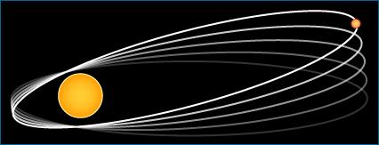

We've seen that evaluating an idea in science is not always a matter of one key experiment and a definitive result. Scientists often consider multiple ideas at once and test those ideas in many different ways. This process generates multiple lines of evidence relevant to each idea. For example, two competing ideas about coral atoll formation (island subsidence vs. formation on debris-topped underwater mountains) were evaluated based on multiple lines of evidence, including observations of reef and atoll shapes, island geology, studies of the distribution of planktonic debris, and reef drilling. Furthermore, different lines of evidence are assembled cumulatively over time as different scientists work on the problem and as new technologies are developed. Because of this, the evaluation of scientific ideas is provisional. Science is always willing to resurrect or reconsider an idea if warranted by new evidence.
It's no wonder then that the evaluation of scientific ideas is iterative and depends upon interactions within the scientific community. Ideas that are accepted by that community are the best explanations we have so far for how the natural world works. But what makes one idea better than another? How do we judge the accuracy of an explanation? The most important factors have to do with evidence — how well our actual observations fit the expectations generated by the hypothesis or theory. The better the match, the more likely the hypothesis or theory is accurate.
- Scientists are more likely to trust ideas that more closely explain the actual observations. For example, the theory of general relativity explains why Mercury's orbit around the Sun shifts as much as it does with each lap (Mercury is close enough to the Sun that it passes through the area where space-time is dimpled by the Sun's mass). Newtonian mechanics, on the other hand, suggests that this aberration in Mercury's orbit should be much smaller than what we actually observe. So general relativity more closely explains our observations of Mercury's orbit than does Newtonian mechanics. 
- Scientists are more likely to trust ideas that explain more disparate observations. For example, many scientists in the 17th and 18th centuries were puzzled by the presence of marine fossils high in the Alps of Europe. Some tried to explain their presence with a massive flood, but this didn't address why these fossils were of animals that had gone extinct. Other scientists suggested that sea level had risen and dropped several times in the past, but had no explanation for the height of the mountains. However, the theory of plate tectonics helped explain all these disparate observations (high mountains, uplifted chunks of the seafloor, and rocks so ancient that they contained the fossils of long extinct organisms) and many more, including the locations of volcanoes and earthquakes, the shapes of the continents, and huge rifts in the ocean's floor.
- Scientists are more likely to trust ideas that explain observations that were previously inexplicable, unknown, or unexpected. For an example, see Rudolph Marcus's story below ...
JUMPING ELECTRONS!
As chemical reactions go, electron transfers might seem to be minor players: an electron jumps between molecules without even breaking a chemical bond. Nevertheless, such reactions are essential to life. Photosynthesis, for example, depends on passing electrons from one molecule to another to transfer energy from light to molecules that can be used by a cell. Some of these reactions proceed at breakneck speeds, and others are incredibly slow - but why should two reactions, both involving a single electron transfer, vary in speed?
In the 1950s, Rudolph Marcus and his colleagues developed a simple mathematical explanation for how the rate of the reaction changes based on the amount of free energy absorbed or released by the system. The explanation fit well with actual observations that had been made at the time, but it also generated an unintuitive expectation - that some reactions, which release a lot of energy, should proceed surprisingly slowly, and should slow down as the energy released increases. It was a bit like suggesting that for most ski slopes, a steeper incline means faster speeds, but that on the very steepest slopes, skiers will slide down slowly! The expectation generated by Marcus's idea was entirely unanticipated, but nevertheless, almost 25 years later, experiments confirmed the surprising expectation, supporting the idea and winning Marcus the Nobel Prize.
What happens when science can't immediately produce the evidence relevant to an idea? Absence of evidence isn't evidence of absence. Science doesn't reject an idea just because the relevant evidence isn't readily available. Sometimes, we have to wait for an event (e.g., the next solar eclipse), hope for a key discovery (e.g., transitional whale fossils in the deserts of Pakistan), or try to develop a new technology (e.g., a more powerful telescope), and until then, must suspend our judgment of an idea.
To learn more about how scientists choose between different explanations, read on ...